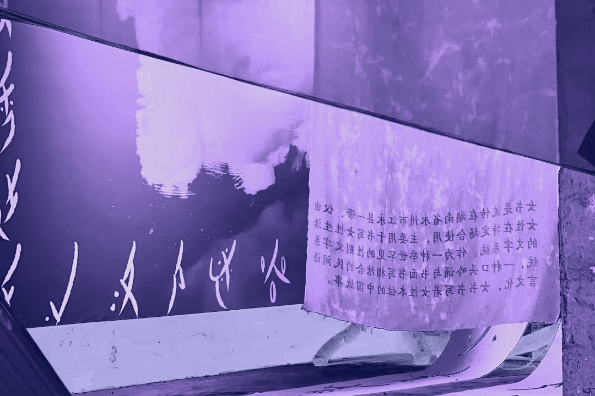
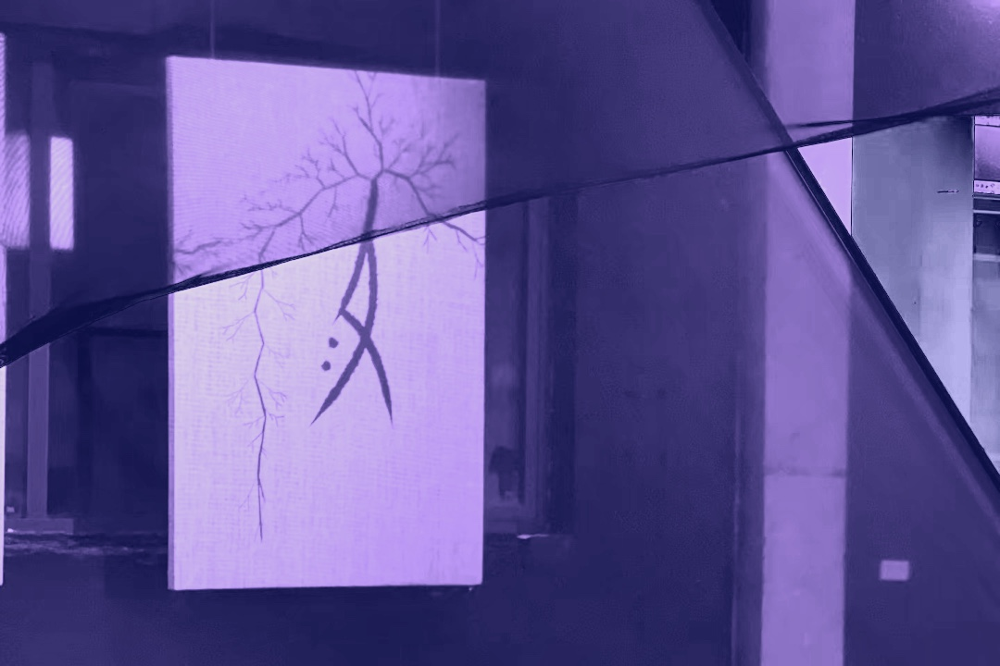

狭义来说，女书是流传在湖南江永潇水流域，迄今发现的世界上唯一的女性文字，由女性创作，女性使用，在女性间流通。
广义来说，女书不止是文字，女书是女书习俗，文化的统称，包括产生这种文化的人文地理，女书流传区域各种风俗习惯以及用女书文字写成的作品和写有这种文字的物体。当地完整的民间文化围绕女书，婚丧嫁娶都深层次地涉及女书文化，已形成一种完整的健全的社会生态。
2006年5月20日，女书习俗经国务院批准列入第-批国家级非物质文化遗产名录。

女书及女书文化是社会失范与规范的产物，是女性反抗的结晶。女书的本质和最终目的，是为姊妹的结交而服务的。
“声音对于被压抑而沉默的女性来说，是一种身份和权力的象征。那么，发声就不只是主体性的要求更是一种身份、一种政治、一种权力的要求。”江永的女性正是试图通过这种书写工具努力改变现存的文化和社会结构，而不是在这种结构之中努力适应它，于是女书，这种可以发声的文字在社会转型的沃土下，经受失范的催化便应运而生了。
女书产生于湘桂粤三省交界，是江永、道县、江华三县交界之地的文化瑰宝。
女书的起源是个谜。大部分学者认为【女书是方块汉字的性别变体，即源于楷书之后】；部分学者认为女书是一种世界性古老文种，古越文字的演变还有部分学者认为女书是甲骨文的母字，是母系社会文化的吉光片羽，也有学者称在仰韶文化、马桥文化、龙山文化等出土的陶器和铭文中看到过女书的踪迹等等。
人死书焚的传统。女书老人死后，除了留给亲人挚友的少量女书外，大多女书都要陪葬带到阴间去继续受用。
社会转型，新的规范再建立。女书自民国以来特别是“五四”运动以后女书开始走向衰落。民国时期，江永县有了女子小学，此后，女性和男性一样可以自由求学、平等任官的企盼一点点地变成了现实，面对如此开放包容的社会秩序，女性开始采取遵从的适应方式，解放以后书衰落的步伐加快，至上世纪末，会读会写会唱女书的人锐减至十人以下，女书传承岌岌可危，目前，能非常熟练地阅读和书写女书的传承人也寥寥无几。

【女书能写万物】
• 音近假借。这是女书记录语言的基本方式，只要声、韵、调接近就可以借用。
• 形近合用。
• 义近借形。如(二、两)
• 有一字多形、一音多字、一字多音等现象。这与当地土话大同小异、文读白读、书写习惯等有关。
• 因此，学理上讲，作为表音文字，用假借的方法，女书字无所不能写。
【女书字形与写法】
• 女书的字形有以下特点：1.简化书写：相比于楷书和草书，它的字形更为简化，删繁就简。2.细长拉长。女书字形造型多为细长、拉长的线条，富有流畅感和优美性。
• 女书的书写，没有折笔、提笔，都是从右上向左下行走笔。圆圈是两笔合成。女书没有标点符号，只有一个重复号。
• 学术层面：
女书具有语言学价值、文学价值、民俗学价值、社会学价值、史学价值、人类学&社会学价值等等，女书是中国妇女对人类文明的伟大贡献。
• 文化凝聚、身心灵方面：
女书是以男性为中心的主流文化中的亚文化。这些同处社会底层的被压抑女性的心理趋同、文化趋同，使女书具有很大的凝聚力。女书以它特有的文化力量，把卑微松散的乡村女性凝聚为以结交女友为形式的组织，大大增强了女性的自我意识和群体意识；并通过倾诉宣泄、相互交流、沟通共鸣、心理调节，从而慰藉、挽救社会最底层的农家妇女支撑她们度过生活的苦难，即使在今天，面对现代文明社会中的一些问题，女书这种倾诉与交流的社会功能，在心理疏导治疗上有其普世价值。
• 艺术&美学方面：
女书&美术；女书&音乐；女书&书法等等，女书作品的艺术性是自然形成的，不是刻意为之的。
• 女书数字博物馆
http://www.chinanvshu.cn/index.php?m=content&c=index&a=lists&catid=14
• 清华大学中国古文字研究中心
http://www.thurcacca.org/bookpage/33/
• 在线女书字典
https://nushu.org/unicode/